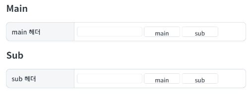
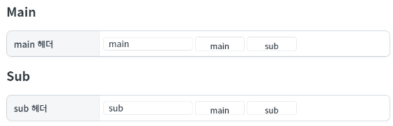
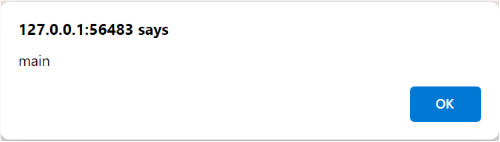
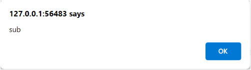
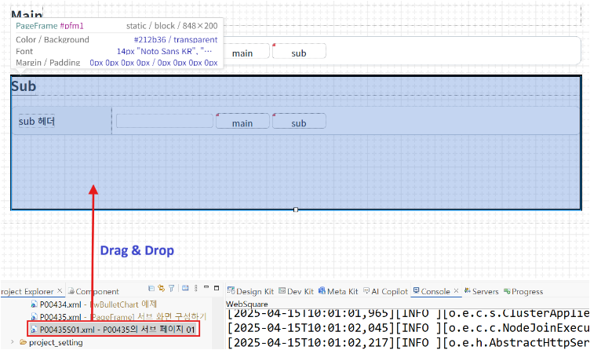
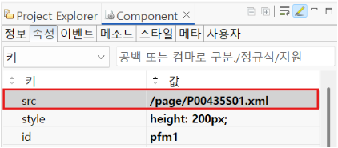

PageFrame을 사용해 서브 페이지를 구성한 예제입니다. IFrame과 유사한 방식으로 서브 페이지를 구성할 수 있습니다. Sub 영역은 pageFrame으로 구성된 부분입니다.
Sub page 연결하기
Main page에서 Sub page의 Inputbox 값 반환받기
Sub page에서 Main page의 Inputbox 값 반환받기
1
STEP 1: 초기 상태를 확인합니다.
Main영역과 서브 페이지인 Sub 영역이 있습니다.
Image 1.브라우저(Chrome) 실행 예시

1
STEP 1: main헤더와 sub헤더의 인풋박스에 값을 입력합니다.
Image 2.브라우저(Chrome) 실행 예시

2
STEP 2: main헤더의 main 버튼을 눌러 반환된 값을 확인합니다.
main 헤더 inputBox의 값이 반환됩니다.
Image 3.브라우저(Chrome) 실행 예시

3
STEP 3: main헤더의 sub 버튼을 눌러 반환된 값을 확인합니다.
sub 헤더 inputBox의 값이 반환됩니다.
Image 4.브라우저(Chrome) 실행 예시

1
STEP 1: sub헤더의 main 버튼을 눌러 반환된 값을 확인합니다.
main 헤더 inputBox의 값이 반환됩니다.
Image 5.브라우저(Chrome) 실행 예시
2
STEP 1: sub헤더의 sub 버튼을 눌러 반환된 값을 확인합니다.
sub 헤더 inputBox의 값이 반환됩니다.
Image 6.브라우저(Chrome) 실행 예시
1
STEP 1: sub page를 생성합니다.
2
STEP 2: 구성할 서브 파일을 pageFrame에 끌어다 놓습니다.
Image 7.스튜디오(Studio) 실행 예시

3
STEP 3: 속성 src에 서브 파일의 경로가 자동 등록됩니다.
[필수] src="서브페이지 경로"
Image 8.웹스퀘어 스튜디오의 Component View - 속성 설정 예시

PageFrame의 'getWindow' 메소드를 사용하여 서브 페이지에 접근합니다.
Example 1.Script
scwin.btn_sub_onclick = function (e) { // 부모 => 자식 (하위 객체 접근) alert(pfm1.getWindow().ipt1.getValue()); };
서브 페이지에서 '$p.parent' 메소드를 사용하여 메인 페이지에 접근합니다.
Example 2.Script
// P00435S01.xml 에서 확인합니다. scwin.btn_main_onclick = function (e) { // 자식 => 부모 (상위 객체 접근) alert( $p.parent().ipt1.getValue() ); };
[pageFrame] getWindow
[util] $p.parent